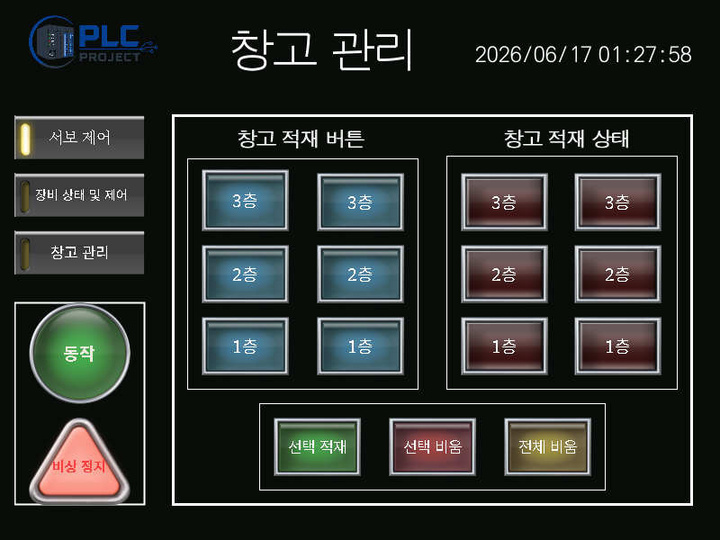
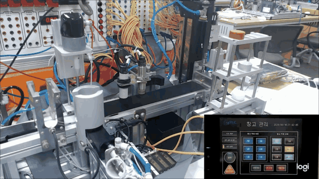
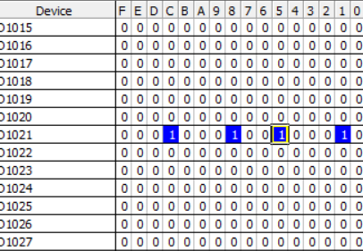
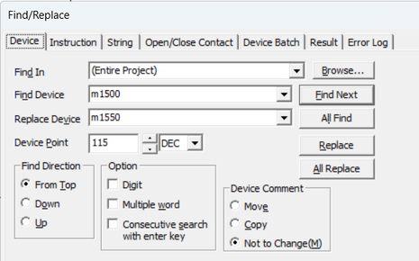
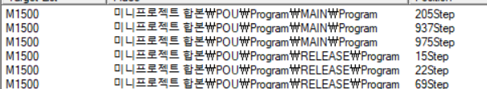
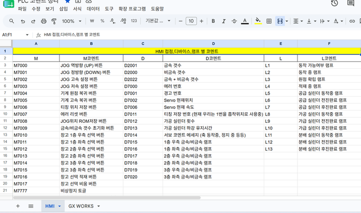

IMPLEMENTATION
선택한 위치만 배출하거나 창고 전체 비우기
사용자 명령을 실제 배출 대상과 이동 순서로 연결했습니다.
| 배출 방식 | 담당 구현 |
|---|---|
| 선택 배출 | 선택한 위치에 소재가 있는지 확인하고, 빈 위치는 제외 |
| 전체 배출 | 창고에 소재가 남아 있는 위치를 찾아 순차 배출 |
| 작업 전환 | 기본 동작 중 선택 배출을 요청하면 현재 시퀀스를 마친 뒤 전환 |
03 / INDUSTRIAL AUTOMATION
소재 분류·적재·배출 자동화 시스템
금속과 비금속 소재를 구분해 창고에 적재하고, 필요한 소재를 자동 또는 수동 명령으로 꺼내는 시스템입니다. 저는 소재를 꺼내는 순서와 선택·전체 배출, 작업 간 충돌을 막는 제어를 담당했습니다.

소재 공급부터 분류·보관·출고까지 하나의 공정으로 연결했습니다. 저장한 위치와 소재 종류를 기억하고, 자동 배출뿐 아니라 사용자가 지정한 위치의 소재도 꺼낼 수 있도록 구성했습니다.
배출 대상을 정한 뒤 장비가 이동하고 소재를 꺼내는 순서를 구현했습니다. 여러 배출 명령이 겹쳐도 진행 중인 동작을 방해하지 않도록 작업 전환과 실행 조건을 관리했습니다.
공급 센서로 소재를 확인하고 컨베이어로 이송
금속·비금속을 구분해 창고에 저장
저장 위치와 같은 종류의 소재 수량 확인
자동·선택·전체 배출 후 다음 작업으로 전환


IMPLEMENTATION
사용자 명령을 실제 배출 대상과 이동 순서로 연결했습니다.
| 배출 방식 | 담당 구현 |
|---|---|
| 선택 배출 | 선택한 위치에 소재가 있는지 확인하고, 빈 위치는 제외 |
| 전체 배출 | 창고에 소재가 남아 있는 위치를 찾아 순차 배출 |
| 작업 전환 | 기본 동작 중 선택 배출을 요청하면 현재 시퀀스를 마친 뒤 전환 |
자동·선택·전체 모드에 맞춰 위치와 순서 확인
저장 위치로 이동한 뒤 소재 흡착
배출 위치로 이동해 소재 해제
남은 배출 대상을 처리하고 적재 또는 초기 상태로 복귀
IMPLEMENTATION
장비 이동부터 배출 후 복귀까지 이어지는 배출 시퀀스를 구성했습니다.
배출이 진행되는 동안 다른 배출 명령이 개입하지 않도록 실행 조건을 제한했습니다. 이처럼 동시에 실행되면 충돌하는 동작을 막는 제어를 인터락으로 구성했습니다.

IMPLEMENTATION
팀의 위치 관리 정보를 사용해 꺼낼 소재가 있는지 판단했습니다.
창고의 6개 위치와 금속·비금속 2가지 종류를 12개의 비트로 표현했습니다. 각 비트는 특정 위치에 해당 소재가 있는지를 나타내며, 16비트 저장 단위 하나에 모아 관리했습니다.
배출 제어에서는 이 상태를 확인해 빈 위치를 제외하고 필요한 소재가 있는 위치를 선택합니다.
| 구현 항목 | 확인한 동작 |
|---|---|
| 선택 배출 | 지정한 위치 중 소재가 있는 위치만 배출 |
| 전체 배출 | 남은 소재를 순차적으로 꺼내 창고 비움 |
| 작업 전환 | 현재 기본 동작을 완료한 뒤 요청한 배출 작업으로 전환 |
| 중복 실행 방지 | 진행 중인 배출 작업에 다른 배출 모드가 개입하지 않도록 제어 |
기능 구현과 시연 자료에서 확인되는 결과를 정리했습니다. 별도의 처리량·오류율 개선 수치는 측정 자료가 없어 포함하지 않았습니다.
PROBLEM SOLVING
선택 비움 진행 중 전체 비움 버튼을 누르면 두 작업이 동시에 개입하면서 장비의 동작 순서가 꼬였습니다.
배출 작업이 진행 중인지 확인하고, 진행 중에는 다른 배출 모드가 실행되지 않도록 인터락을 추가했습니다.
현재 실행 중인 배출 모드를 유지하고 다른 배출 명령의 개입을 차단했습니다.
PROBLEM SOLVING
PLC 내부 상태를 유지하는 M 디바이스를 여러 개 사용하면서 다른 상태를 해제하거나, 일괄 초기화 명령(BKRST)의 범위를 잘못 지정했습니다.
디바이스 검색과 참조 화면으로 사용 위치를 추적하고, 초기화 대상과 범위를 확인해 수정했습니다.
잘못 지정된 초기화 대상을 찾아 수정했습니다.


PROBLEM SOLVING
팀원이 같은 M 디바이스 주소를 중복 사용하거나 기존 번호를 바꾸면서 다른 동작에 영향을 주었습니다.
스프레드시트에 디바이스 주소 할당과 사용 규칙을 정리해 공유했습니다.
각 기능의 사용 영역과 번호 변경의 영향을 확인할 공통 기준을 마련했습니다.

배출 순서 자체뿐 아니라 작업 중 다른 명령이 들어왔을 때의 처리도 중요했습니다. 진행 중인 작업을 언제 마치고 다음 작업을 허용할지 명확히 나누는 기준을 얻었습니다.
내부 주소의 중복이나 초기화 범위 오류가 다른 기능에 영향을 줄 수 있었습니다. 다음에는 기능별 주소 영역과 상태 해제 조건을 먼저 정리하고, 모드 전환 상황을 포함해 통합 동작을 확인하고 싶습니다.